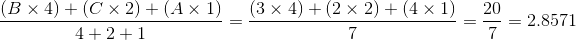

O Instituto de Computação possui cursos em nível de Graduação e Pós-Graduação. Na Graduação, o Instituto oferece os cursos de Ciência da Computação e Engenharia da Computação. Ja na Pós-Graduação, os cursos são divididos em duas categorias: Stricto Sensu e Lato Sensu, onde cursos Lato Sensu visam a especialização, e cursos Stricto Sensu visam à qualificação de pesquisadores, docentes e outros profissionais nas diversas áreas do conhecimento. Os dois cursos oferecidos pelo instituto na modalidade Stricto Sensu são Mestrado em Ciência da Computação e Doutorado em Ciência da Computação.
Diferentemente dos cursos de Graduação, onde as avaliações de rendimento das disciplinas são representadas por números de 0 a 10, e um aluno é aprovado se sua nota é maior ou igual a 5 e possui frequência mínima, as disciplinas de Pós-Graduação da Unicamp adotam o sistema de conceitos, representados por cinco letras:
O Coeficiente de Rendimento (CR) é o índice que mede o desempenho acadêmico de um aluno ao longo de seu curso. Para os cursos de Graduação, o CR é calculado da seguinte forma:
O cálculo do CR dos cursos de Pós-Graduação é feito de forma semelhante:
| Conceito | Peso |
| A | 4 |
| B | 3 |
| C | 2 |
| D | 1 |
| E | 0 |
Suponha que um aluno de Pós-Graduação tenha feito 3 disciplinas, com número de créditos e conceitos finais conforme tabela abaixo:
| Conceito Final | Créditos |
| B | 4 |
| C | 2 |
| A | 1 |
Sendo assim, o seu CR será calculado da seguinte forma:
Sua tarefa neste laboratório é desenvolver um programa que, dado uma lista de conceitos e número de créditos de um aluno de Pós-Graduação, calcule seu CR.
| # | Entrada | Saída |
| 1 | A 4 B 6 C 2 C 4 B 2 A 1 D 4 E 2 A 6 * | CR = 2.7097 |
| 2 | E 4 E 10 E 2 E 1 E 7 E 3 E 6 E 5 E 9 E 7 E 1 E 4 E 8 E 10 E 6 E 3 E 5 E 2 E 2 E 7 * | CR = 0.0000 |
| 3 | A 10 A 2 A 1 A 6 A 10 * | CR = 4.0000 |
| 4 | A 4 B 3 C 2 D 1 E 2 A 3 B 4 C 5 * | CR = 2.6667 |
| 5 | * | CR = Indefinido |